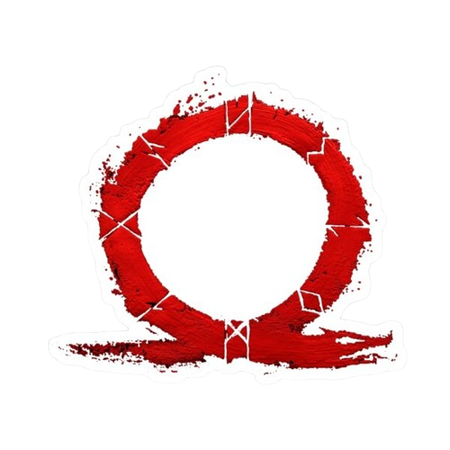

A franquia "God of War" foi criada pela Santa Monica Studio, parte da Sony Interactive Entertainment. Lançado em 2005 para PlayStation 2, o jogo foi desenvolvido por David Jaffe e baseado na mitologia grega, seguindo a jornada de vingança do guerreiro espartano Kratos contra os deuses do Olimpo.
O sucesso do primeiro jogo levou ao desenvolvimento de várias sequências e prequelas, expandindo o universo da franquia e explorando outras mitologias, como a nórdica. Com destaque para a trilogia original lançada para PlayStation 2 e 3, "God of War" se tornou uma das séries mais icônicas e aclamadas dos videogames, conhecida por sua jogabilidade visceral, narrativa épica e personagem carismático.
Em 2018, a franquia passou por um reboot com o lançamento de "God of War" para PlayStation 4, que recebeu elogios da crítica e do público, apresentando uma abordagem mais madura da história de Kratos, agora envolvido na mitologia nórdica e com um foco emocional na relação com seu filho Atreus. A franquia continua sendo uma das principais séries exclusivas da PlayStation, com planos para mais títulos no futuro.
God of War é um jogo de ação-aventura lançado em 2005. É o primeiro jogo da série e conta a história de Kratos, um guerreiro espartano que busca vingança contra Ares, o deus da guerra.
God of War II é a sequência do aclamado primeiro jogo. Lançado em 2007, continua a saga de Kratos enquanto ele enfrenta deuses e monstros da mitologia grega.
God of War III é o terceiro jogo da série principal. Lançado em 2010, Kratos continua sua jornada épica, culminando em uma batalha final contra Zeus.

God of War (2018) reinventa a série com uma nova perspectiva e um novo cenário. Kratos agora vive no mundo da mitologia nórdica com seu filho Atreus.
Até 19 de novembro, God of War Ragnarök vendeu mais de 15 milhões de unidades em todo o mundo nos consoles PS4 e PS5
"God of War" de 2018 recebeu aclamação universal da crítica, alcançando uma pontuação agregada de mais de 94/100 no Metacritic, tornando-se um dos jogos mais bem avaliados da história.
A Santa Monica Studio é uma desenvolvedora de jogos sediada em Santa Monica, Califórnia, conhecida por criar jogos exclusivos para os consoles PlayStation. Fundada em 1999, é parte da Sony Interactive Entertainment Worldwide Studios. Seu título mais famoso é a franquia "God of War", marcada por narrativas envolventes, jogabilidade inovadora e gráficos impressionantes. A equipe é reconhecida por sua paixão e abordagem colaborativa no desenvolvimento de jogos, e continua a ser uma das principais desenvolvedoras na indústria de videogames.